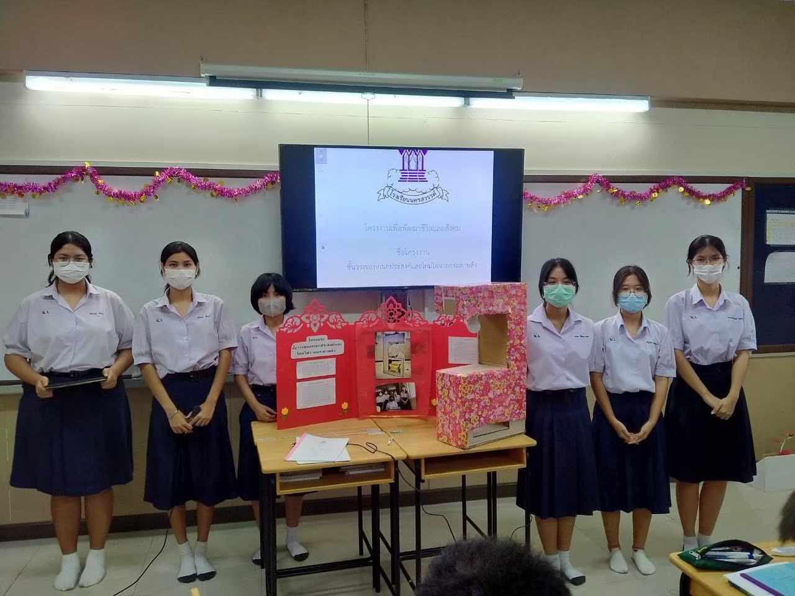

มีส่วมร่วมในการวาดภาพระบายสีป้ายไวนิลประจำคณะสีเอราวัณประจำปีการศึกษา 2566
ดิฉันได้มีส่วนร่วมในการจัดทำป้ายของคณะสี ในธีม “เทพเจ้ากรีก” ซึ่งได้มีการนำเทพเจ้า อพอลโลซึ่งเป็นเทพเจ้าแห่งดวงอาทิตย์ แสงสว่างมาเป็นจุดเด่นในการทำป้ายไวนิลครั้งนี้ โดยที่มีพื้นหลังเป็นสิ่งปลูกสร้างเกี่ยวกับโบราณสถานของกรีก
เข้าร่วมกิจกรรม “สื่อสุขภาพใจ มุมมองไหนที่อยากเห็น” โดย ไซคีทัวร์ไลฟ์


หลังจากที่ได้เข้าร่วมอบรมการสร้างสื่อเกี่ยวกับจิตวิทยาทำให้ดิฉันรับรู้ว่า ปัจจุบันในโลก โลกาภิวัตน์ ผู้คนปัจจุบันมักจะมีปัญหาในเรื่องสุขภาพจิตกันมาก ไม่ว่าจะมาจากครอบครัว หรือคนรอบข้าง ดังนั้นผู้คนจึงอาศัยพึ่งพาข้อมูลจากสื่อที่สามารถเข้าถึงได้ง่ายอย่างโซเชียลมีเดียทั้งหลาย เพื่อหาแนวทางการแก้ไขปัญหาในใจของตนเองหรือของผู้อื่น ดังนั้นการที่จะสร้างสื่อเกี่ยวกับจิตวิทยานั้นจะต้องมีการวางแผนการจัดการทำสื่อที่รอบคอบ เพื่อไม่ให้เกิดการเข้าใจผิด ตัวอย่างเช่น แคปชั่นคำคมที่เขียนไว้ “นักจิตวิทยาได้กล่าวไว้ว่า”
อนิเมชั่นสั้นๆไม่เกิน 1 นาที ที่ดิฉันเคยวาดลงใน TikTok
สแกนคิวอาร์โค้ดด้านบนเพื่อเข้าชม หรือไปที่ https://www.tiktok.com/@surunchanapn
เป็นตัวแทนห้องไปนำเสนอโครงงานวิทยาศาสตร์เรื่องชั้นวางหนังสืออเนกประสงค์จากลังกระดาษเหลือใช้
โดยมีแนวคิดในการนำลังกระดาษที่เหลือใช้ นำมารีไซเคิลให้สามารถใช้ประโยชน์ได้สูงสุด นอกจากว่าจะเอาไว้วางหนังสือได้แล้วยังมีหลอดไฟไว้สำหรับเปิดอ่านหนังสือหรือทำอย่างอื่นได้อีกด้วย
ผลงานดีไซน์คาร์แรกเตอร์ประจำโรงเรียนนครสวรรค์
โดยมีตัวละครเป็นแมวสีส้มที่แสดงถึงความสดใสร่าเริง และแมวสีส้มส่วนใหญ่มักจะเป็นตัวผู้เป็นตัวแทนของ LGBTQ+ เสื้อคลุมสีรุ้งแทนคณะสีต่างๆ และตาสีม่วงขาวแทนด้วยสัญลักษณ์ของโรงเรียน
ผลงานการออกแบบคาเฟ่ของตัวเองด้วยโปรแกรม Sketchup 2021


SauRU's Café เป็นคาเฟ่สไตล์เรียบง่ายเน้นบรรยากาศวิวภายนอกได้อย่างชัดเจน ทั้งยังได้ฟีลคล้ายกับบรรยากาศนั่งบาร์อีกด้วย